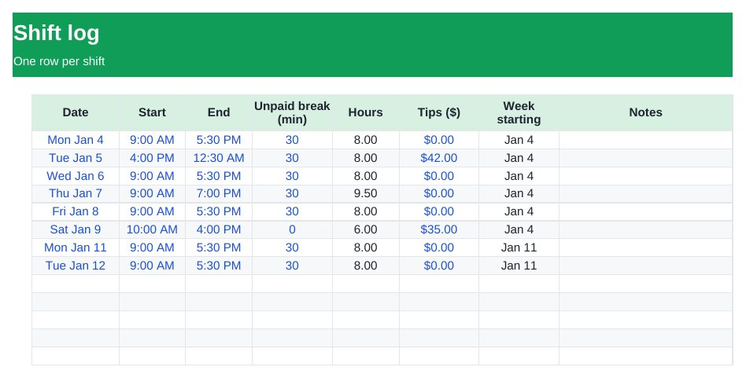

Home › Free Downloads › Excel
Free Excel downloadShift & Pay Tracker with Overtime
Log your shifts and see weekly hours, overtime, tips and gross pay, so you can check every paycheck against the hours you actually worked.
⬇ Download the Excel file .xlsx · free · no sign-upWorks in Microsoft Excel, Google Sheets (File → Import) and Apple Numbers.

What’s inside
- Shift log with start, end and unpaid break (overnight shifts handled)
- Weekly totals for Monday–Sunday weeks
- Regular and overtime hours with your own threshold and multiplier
- Tips and gross pay per week, plus year-to-date totals
How to use it
- Enter your hourly rate, overtime threshold and multiplier in Settings.
- Add each shift on the Shifts tab.
- Compare the Weekly Pay tab with your pay stub.

EarnCheck: Shift & Pay Tracker
EarnCheck confirms shifts in one tap, keeps overnight shifts together and compares your hours with your pay statement.
Get it free on the App StoreQuestions
How is overtime calculated?
Hours over your weekly threshold (40 by default) in each Monday–Sunday week are paid at your multiplier (1.5 by default). Overtime rules vary by state and employer, so check yours.
Does it handle shifts that end after midnight?
Yes. A 4 PM–12:30 AM shift counts as one shift of the right length.
Is the pay before or after tax?
Gross pay, before tax and deductions.
More free downloads
Daily Water Intake Tracker 2027Job Estimate & Invoice TemplateClient Appointment Booking LogSleep Log & Bedtime Routine TrackerScreen Time Tracker: What Your Phone Really CostsBible Reading Tracker: All 66 BooksFamily Emergency Plan TemplateAfter-the-Argument Repair WorksheetThe 11 Human Body Systems: Free SlidesBooks of the Bible by Section: Free SlidesWhy Is the Sky Blue and Sunsets Red? Free Slides